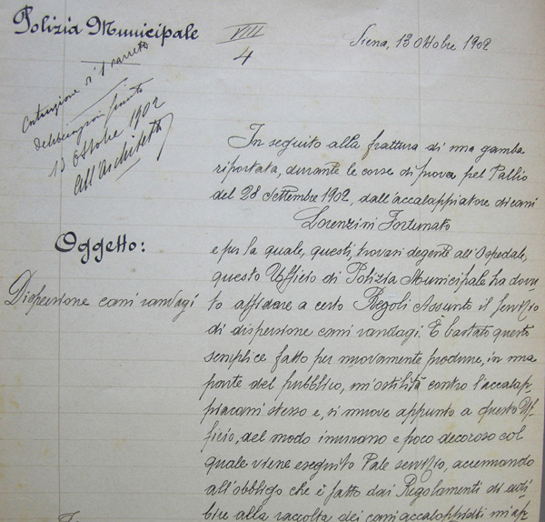
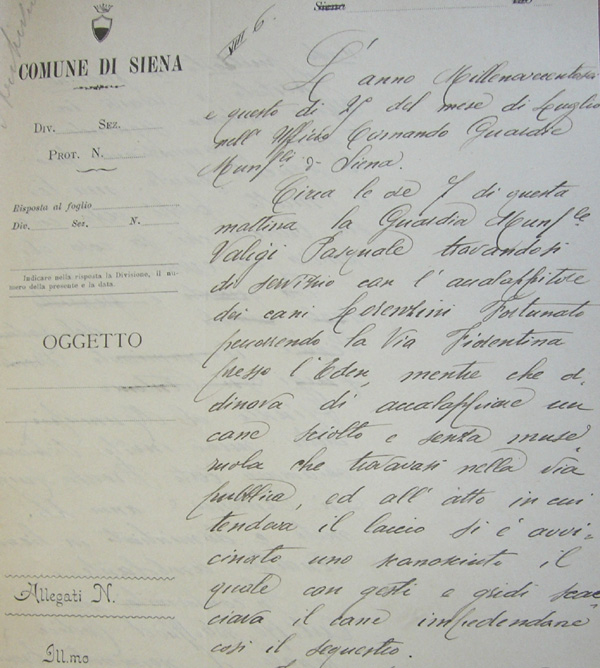
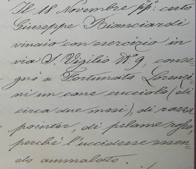
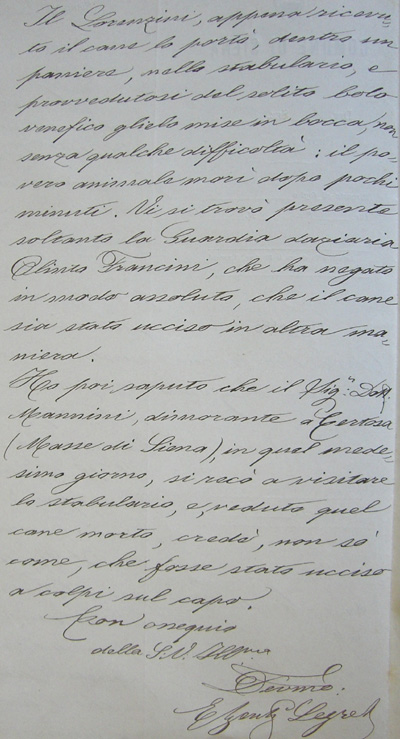

In seguito alla frattura di una gamba riportata, durante le corse di prova* per Pallio del
28 Settembre 1902, dall'accalappiatore di cani
Lorenzini Fortunato
e per la quale, questi trovasi degente all'Ospedale, questo Uffico di Polizia Municipale
ho dovto affidare a certo Regoli Assunto il servizio di dispersione cani randagi. E' bastato questo semplice fatto per
nuovamente produrre, in una parter del pubblico, un'ostilità contro
l'accalappiacani stesso e, si muove appunto a questo Ufficio, del modo
inumano e poco decoroso col quale viene eseguito tale servizio accennando all'obbligo
che è fatto dai Regolamenti di adire alla raccolta dei cani accalappiati...

* In realtà Dannato non corse nessuna prova, bensì una sola batteria per la tratta, durante la quale potrebbe essersi infortunato. Il compenso che prese dal Comune fu di 1 lira e sessanta centesimi.
 L'anno Millenovecentosei e questo dì 25 del mese di Luglio nell'Ufficio Comando Guardie Municipali di Siena.
L'anno Millenovecentosei e questo dì 25 del mese di Luglio nell'Ufficio Comando Guardie Municipali di Siena.
Circe le ore 7 di questa mattina la Guardia Municipale Valigi Pasquale
trovandosi di servizio con l'accalappiatore dei cani Lorenzini Fortunato percorrendo
la via Fiorentina presso l'Eden, mentre che declinava di accalappiare un cane sciolto e senza museruola
che trovavasi nella via pubblica, ed all'atto
in cui tendeva il laccio si è avvicinato uno sconosciuto il quale con gesti e gridi scacciava il cane impedendone
così il sequestro

Il 18 Novembre prossimo passato (1901) certo Giuseppe Bianciardi vinaio con esercizio
in via S.Vigilio N°9, consegnò a Fortunato Lorenzini un cane cucciolo (di circa due mesi), di razza pointer, di pelame
rosso, perchè l'uccidesse essendo ammalato.
Il Lorenzini, appena ricevuto il cane lo portò, dentro un paniere, nello stabulario, e provvedutosi
del solito bolo venefico glielo mise in bocca, non senza qualche difficoltà: il
povero animale morì dopo pochi minuti. Vi si trovò presente soltanto la Guardia daziaria Olinto Francini, che ha negato in modo
assoluto, che il cane sia stato ucciso in altra maniera.
Ho poi saputo che il Sig. Dott. Mannini, dimorante a Certosa (Masse di Siena), in quel medesimo giorno,
si recò a visitare lo stabulario, e veduto quel cane morto, credè, non sò come, che fosse stato ucciso a colpi sul capo.



 ACCADDE OGGI
ACCADDE OGGI